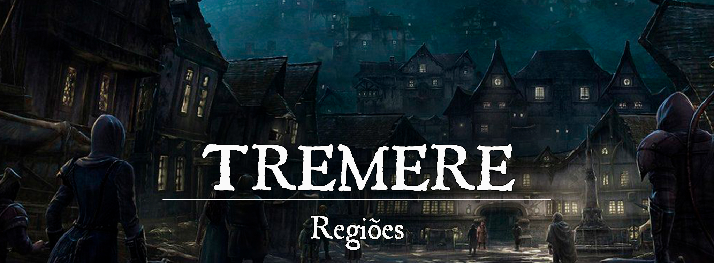

Tremere
Descrição
Escondida nas Colinas Silenciosas, a cidade de Tremere se ergue como um dos assentamentos mais sombrios de Pheros. Tremere é o berço das ordens mais antigas de caçadores de sangue, portadora de segredos ancestrais e lar de criaturas muito além do meramente humano. A nobreza esbanja sua riqueza promovendo festas e bailes em suas propriedades, convidando outros nobres de toda Gronnemar para testemunhar o que há de mais belo em Tremere.
Descrição Visual:
Tremere é uma cidade gótica, com grandes torres, castelos e telhados pontudos como lanças que desafiam os próprios céus. As noites em Tremere são escuras e longas, fazendo com que muitas velas e tochas estejam acesas nesse horário. A cidade é dividida em três principais regiões: Coroa Alta, Coroa Baixa e Cidade Sombra.
unknown (68).png |Coroa Alta
{kind=link}
Coroa Alta se encontra elevada sobre o resto da cidade e é o lar da nobreza tremeriana. Os telhados pontudos são abundantes nesta região e as ruas raramente são mal iluminadas durante a noite. Na verdade, o movimento em Coroa Alta durante a noite é comum. Lojas, restaurantes e tavernas permanecem abertas até depois do anoitecer e passeios noturnos são ligeiramente comuns entre a nobreza.
unknown (69).png |Coroa Baixa
{kind=link}
Coroa Baixa é onde o povo comum de Tremere vive, sempre olhando de baixo as casas de Coroa Alta. Longe de ser organizado, mas ainda bastante habitável, Coroa Baixa conta com muitos becos, vielas e cortiços, e o perigo de alguns bairros é notável. O povo dessa região não conta com tantas fontes de luz como aqueles que habitam Coroa Alta, portanto, o movimento é bem baixo durante as noites escuras da cidade.
unknown (70).png |Cidade Sombra
{kind=link}
Cidade Sombra não é um bairro em Tremere, e sim uma rede de túneis e galerias subterrâneas que atravessam toda a cidade (e vão além, em alguns casos). Existem poucas construções, e a maioria pertence a contrabandistas, caçadores de sangue ou criaturas sombrias que buscam evitar os olhares atentos da sociedade. Cidade Sombra é conectada com os esgotos de Tremere, portanto, existem acessos que levam até mesmo a Coroa Alta.
Sociedade
População:
Os humanos representam uma parte enorme da população de Tremere, e é quase incomum raças além deles. Anões, elfos e meio-elfos, metamorfos e kenkus são algumas das poucas raças que podem ser vistas em Tremere (e os últimos dois exemplos, normalmente na Cidade Sombra).
Cultura:
O Povo Comum
As pessoas de Tremere se esforçam para viver seu dia a dia normalmente. Todos precisam ser fortes para sobreviver em Tremere, pois em algum momento será preciso lidar com as dificuldades que a cidade oferece. Algumas dessas dificuldades, no entanto, representam perigos que um mero humano não é capaz de resolver. Para essas situações, o povo comum espera contar com os caçadores de sangue ou até mesmo com criminosos que vivem na Cidade Sombra. O povo tremeriano não se importa em ajudar foras da lei ou quem quer que seja se isso salvará suas vidas.
A Nobreza
Os nobres de Tremere adoram ostentar suas riquezas e sempre estão seguindo a última moda. Além disso, os nobres tremerianos sempre utilizam máscaras finamente ornamentadas em locais públicos, sempre causando um ar de suspense àqueles com quem se encontram. As máscaras são importantes para todos eles e muitas delas são relíquias passadas de geração em geração. Não apenas adoram exibir seus pertences e esnobar aqueles que não estão seguindo a última moda, como também praticam incontáveis esportes e modalidades. Os mais comuns são: Esgrima, Justas (desporto), Arcanismo e Caça.
Os Caçadores de Sangue
A maioria das ordens de caçadores de sangue debandou há muito, deixando seus afiliados desabrigados e despojados dos segredos da organização. Alguns caçadores ficaram adoecidos após um ritual de iniciação indevido, e por conta disso, usam máscaras para evitar infectar outros companheiros.
Os caçadores de sangue costumam viver na Cidade Sombra e tratam de perseguir as criaturas sombrias que vagam pelas ruas de Tremere ao anoitecer. Na maior parte do tempo, seus problemas se encontram na Cidade Sombra e em túneis tão longínquos que alcançam as Estradas Subterrâneas dos anões. A maioria dos caçadores de sangue evita contato com o povo comum.
Caráter:
A maioria das pessoas em Tremere são desconfiadas de forasteiros, principalmente em relação aos que demonstram algum ar de bondade. “Pessoas boas são as que mais tem a esconder”. A nobreza simplesmente é esnobe e mesquinha, raramente se importando com alguém além deles mesmos. Os caçadores de sangue não confiam em ninguém e podem se tornar hostis se forem demasiadamente importunados.
Datas e Festividades:
Bailes & Festas: Os luxuosos bailes tremerianos são conhecidos pelo mundo inteiro e é uma honra enorme ser convidado a um deles, principalmente se o convite vier de um nobre renomado na cidade.
Religião:
Não há uma fé oficial em Tremere, no entanto, Rangel, o Orador e Vesunna são deuses comumente adorados. Tremere é uma cidade sombria e cheia de segredos, e deuses malignos são tão cultuados quanto qualquer outro, sendo os mais comuns Asmodan, Moira e Voss.
Economia
Tremere oferece muitas mercadorias exóticas e explora minas de prata e gemas preciosas. Tremere é uma grande exportadora de remédios, tecidos e mobílias.
Serviços:
Os mais diversos serviços podem ser conseguidos em Tremere, mesmo os ilegais. Caçadores de sangue podem atuar como mercenários dispostos a ajudar em uma briga contra um monstro, mas dificilmente são muito confiáveis.
Governo
A cidade é governada pelo Regente e o título é passado hereditariamente. No entanto, Tremere foi governada por reis no passado, mas desde o assassinato do último rei, apenas o título de regente foi atribuído ao governante.
Poderio Militar:
Sendo uma cidade de tantos conflitos, é esperado que Tremere não tenha ninguém para protegê-la, o que está muito longe de ser verdade. A Guarda Local se dedica a proteger até mesmo os cantos mais sombrios de Tremere, fazendo suas patrulhas tanto em Coroa Alta quanto Coroa Baixa. Em alguns casos extremamente específicos, eles podem até explorar Cidade Sombra (mas sempre em missão, nunca em patrulha).
Conflito
Tremere é uma cidade de muitos conflitos internos e que demonstra sua perseverança ao perdurar dia após dia. Os crimes que ocorrem nas regiões mais pobres da cidade são corriqueiros, mas a população parece quase sempre saber lidar com esses problemas. A verdadeira dificuldade surge quando as feras que vivem na Cidade Sombra decidem vir à superfície. Pessoas comuns não sabem lidar com monstros, portanto, a presença de caçadores de sangue na cidade é indispensável, e até mesmo alguns nobres reconhecem o bom trabalho que eles fazem. É incerto de onde esses monstros surgem, então é teorizado que os túneis da Cidade Sombra alcançam profundidades muito além do esperado.
Para a infelicidade dos caçadores de sangue, alguns monstros conseguem se disfarçar entre o povo comum, e alguns até mesmo se tornam pessoas importantes em Tremere. Alguns poucos desses estão fora do alcance das mãos dos caçadores. Outros, os caçadores apenas decidem ignorar, supondo que não representam ameaça o suficiente para serem caçados.
Organizações Relevantes
-
Ordem dos Mutantes: Os caçadoras mutantes, por terem sobrevivido ao Crepúsculo das Facas, são consideravelmente mais bem equipados que o caçadores que tiveram suas ordens destruídas. Sua sede é encontrada na Cidade Sombra, um laboratório praticamente abandonado, com apenas os caçadores mais antigos cuidando do local. Para se tornar um caçador mutante, o indivíduo deve ingerir uma quantidade mortal de ervas especiais e um elixir que causa terríveis dores, o Elixir Lucis.
-
Ordem das Bestas: Os caçadores licantropos também sobreviveram ao Crepúsculo das Facas graças ao sacríficio de um velho caçador. Sua sede está na Cidade Sombra, oculta em túneis escuros e profundos. Os caçadores licantropos preferem a noite e são considerados os mais violentos de todos os caçadores. Bem equipados e resistentes, esses caçadores ingerem ervas especiais que os ajuda a controlar a maldição.
Locais Relevantes
Ordem dos Caçadores Mutantes: A Ordem dos Mutantes sobreviveu ao Crepúsculos das Facas devido a uma caçadora que escondeu os segredos fórmulas e elixires. Um único ingrediente, no entanto, foi perdido, mas a mesma caçadora o substituiu pelo seu próprio sangue misturado com ervas especiais. Esse ingrediente é conhecido como "Elixir Lucis" atualmente e é um dos materiais necessários para fazer a iniciação dos caçadores mutantes da Ordem em Tremere.
Ordem dos Caçadores Licantropos: A Ordem dos Licantropos também sobreviveu ao Crepúsculo das Facas, no entanto, foi devido ao esforço violento de um único caçador, que morreu defendendo a sede. Esse caçador, conhecido como um dos "filhos de Yeenoghu", violentamente matou todos aqueles que ousaram entrar na ordem para queimá-la.
NPCs Relevantes
38891f9c5db721da199224f8b7dfadb5.jpg |Karlov Voldaren, Regente de Tremere
{kind=link}
Karlov Voldaren, Regente de Tremere: é um homem enigmático e carismático, com uma aparência imponente e intimidadora. Ele governa com mão firme e é temido e respeitado pelos residentes. No entanto, há boatos de que ele é, na verdade, um vampiro, já que ele raramente aparece durante o dia e tem hábitos estranhos. Os residentes relatam ter visto o regente caçando à noite, sugando o sangue de animais e até mesmo pessoas. Ele também é acusado de manipular as mentes dos cidadãos, a fim de mantê-los sob seu controle. Apesar das suspeitas dos residentes, nenhuma prova concreta foi encontrada pelos caçadores de sangue para confirmar se ele é realmente um vampiro. Ele supostamente age com discrição, escondendo seus atos malévolos dos cidadãos.
02df8a2bcd10e28152f400f04d0aa322.png |Iosefka
{kind=link}
Iosefka: Iosefka é de longe uma das figuras mais importantes para os caçadores de sangue e habitantes de Tremere. Sendo a responsável pela Clínica de Iosefka, a médica cuida de qualquer que busque auxílio em seu humilde estabelecimento. Os caçadores de sangue respeitam Iosefka pela ajuda que lhes presta, e mesmo aqueles que sabem de sua origem sombria preferem simplesmente deixá-la em paz.
linette_by_bellabergolts_ddzdsn6-pre.jpg |Mylle
{kind=link}
Mylle, Capitã da Guarda: Mylle é extremamente dedicada ao seu dever como capitã da guarda. É reconhecida tanto pelo povo comum quanto pela nobreza por sua determinação e afinco em proteger as ruas de Tremere. Sob suas ordens, os guardas são devidamente treinados e preparados para lidar com os mais diversos conflitos. Mylle é marcada por uma feia cicatriz no lado direito de seu rosto, uma queimadura causada pela explosão de uma bomba alquímica. Mylle sofreu esse ferimento quando ainda era jovem. A bomba foi atirada por um caçador de sangue que errou o alvo. Por conta disso, Mylle dificilmente confia em algum caçador.
ba6051858d70b0c5daed2e2c48a2aa00.jpg | Benedict Sieghart
{kind=link}
Benedict Sieghart: O velho caçador de sangue, Benedict Sieghart, é um dos últimos sobreviventes da Ordem dos Purgadores. A Ordem dos Purgadores foi uma das muitas ordens que desabou durante o Crepúsculo das Facas. Benedict possui mais de um século de vida e é um caçador lendário, extremamente forte e preparado.
f3ab155720736ce6674f5dfae3abdae0.png |Lilian Moreau
{kind=link}
Lilian Moreau: Lilian é uma mulher sedutora e manipuladora que é conhecida em toda a Coroa Alta por suas extravagantes festas e bailes luxuosos. Ela possui uma aparência atraente, com cabelos dourados ondulados e olhos azuis brilhantes. É astuta e sabe como usar sua beleza e charme para obter o que quer. Lilian tem um segredo obscuro escondido e é ligada a uma poderosa organização em Tremere, de onde ela possui habilidades sobrenaturais e influência considerável. Sua mansão é um lugar luxuoso, localizado em uma das áreas mais nobres da Cidade Sombra, e é frequentada por outros membros importantes da sociedade vampírica.
Origem
A longa história de Tremere data desde os tempos do Império de Elselenor. Construída escondida nas Colinas Silenciosas para evitar o olhar curioso dos elfos, Tremere como uma fortaleza de madeira e palha. Os primeiros moradores da fortaleza notaram que, apesar do lugar estar intocado por qualquer civilização, passagens para túneis escondidos eram encontradas em toda a região. Os túneis se aprofundavam na terra e viajavam para longe da fortaleza, e não pareciam ser habitados por ninguém. Eventualmente, os homens decidiram usá-los para interligar os assentamentos que eram construídos nas colinas.
Muitos séculos se passaram e os túneis que viriam a ser a Cidade Sombra se tornaram cada vez mais úteis para os homens. Os elfos permaneciam longe das Colinas Silenciosas e deixavam os homens construírem para si. Era quase como se tivessem medo daquele lugar… um temor que se mostrou sensato.
Quando as primeiras pessoas começaram a desaparecer em suas viagens pelos túneis, rapidamente grupos foram enviados para investigar. No entanto, nenhum desses grupos de busca retornava, e o medo começou a se tornar constante. Não haviam trilhas ou estradas para interligar os pequenos assentamentos que se formavam nas Colinas Silenciosas, portanto, o fechamento dos túneis estagnaria o comércio local. Os antigos líderes de Tremere decidiram que os túneis permaneceriam abertos e que as viagens seriam todas feitas com homens armados. Nada mudou.
As pessoas passaram a se recusar a entrar nos túneis, e nem mesmo aqueles que estavam armados desejavam fazer as viagens. Um dos líderes da fortaleza, conhecido hoje apenas como Garrett, ficou enfurecido pela covardia local e decidiu entrar nos túneis ao lado de seus soldados para eliminar o que quer que fosse que estava sequestrando os viajantes. A comitiva passou semanas desaparecida, até que finalmente retornou. Alguns poucos homens retornaram, Garrett entre eles, todos feridos e exaustos pela jornada. O primeiro ato de Garrett foi anunciar que ele seria o rei da fortaleza Tremere e que nenhum covarde merece governar. Os antigos líderes que não concordaram foram mortos pelas mãos de Garrett e seus soldados.
O povo comum não se importou com a liderança de Garrett como os antigos líderes se importaram. No entanto, era inegável que havia algo estranho com o homem e com os soldados que lutaram ao lado dele nos túneis. Eles nunca tiravam as armaduras, quase não comiam ou bebiam, e seus olhares eram perdidos e assustadores. Com o tempo ficou óbvio que não eram mais humanos. Garrett passou a oprimir seu povo e a devorar a carne daqueles que fossem contra ou tentassem fugir de suas garras. Armas mundanas não eram efetivas contra Garrett ou contra qualquer um dos seus soldados.
Foi então que, em uma tentativa desesperada de matar o tirano e seus lacaios, algumas pessoas imploraram ajuda a um druida que vivia isolado próximo da região. Esse druida, que assistiu pacientemente a história de Tremere, decidiu ajudá-los, mas afirmou que o preço seria alto. As pessoas aceitaram a proposta. O druida reuniu diversas ervas que nunca foram vistas pelo homem e criou um elixir. A mistura fortaleceria temporariamente as pessoas que bebessem, mas o uso era letal. Não se sabe ao certo quantas pessoas beberam do elixir, no entanto, é sabido que apenas três sobreviveram. Eles foram os primeiros caçadores de sangue, completamente diferentes dos atuais. Suas forças eram temporárias e eles não tinham o mesmo treinamento ou o armamento necessário para matar feras sobrenaturais. Ainda assim, foi com essa força que mataram Garrett e seus grotescos soldados, libertando Tremere da opressão do tirano.
Os caçadores de sangue, infelizmente, não viveram muito depois de terem salvado Tremere. Um deles tinha morrido em combate e os outros dois faleceram semanas após o embate, extremamente adoecidos pelo elixir. Apesar da vileza do elixir, os tremerianos decidiram estudá-lo e aprimorá-lo para o futuro.
Com a morte de Garrett, o trono de Tremere ficou vazio. Um pequeno conselho foi formado com as pessoas mais importantes da cidade. Juntos, eles elegeram um novo rei para governar a fortaleza. Originalmente, o rei de Tremere seria eleito pelo conselho da fortaleza, mas o primeiro rei de Tremere, Remy Sonhart, assassinou todos os conselheiros e proclamou que o título seria passado hereditariamente. A Casa Sonhart governou Tremere por incontáveis gerações, até finalmente ser extinta no ano 1.410 (da Segunda Era). Desde então, a cidade tem sido governada apenas por Regentes.
Contos de Tremere:
Um dos contos mais sanguinários de Tremere foi o Crepúsculo das Facas (ocorrido por volta do ano 1.410). O último rei de Tremere, o Rei Karles Sonhart, se demonstrou um homem louco e obcecado por eliminar qualquer vestígio da corrupção de criaturas sombrias na cidade. Karles foi o fundador dos Caçadores de Bruxas, uma organização semelhante aos caçadores de sangue, mas que não se submetiam a rituais profanos para aumentar suas forças. Uma espécie de inquisição foi realizada em Tremere para purgar todo e qualquer mal em suas ruas e casas. Pessoas inocentes foram queimadas vivas, caçadores de sangue foram covardemente assassinados e estacas empalando monstros (ou raças diferentes) se tornaram a decoração de Tremere.
O maior feito do Rei Karles Sonhart foi atacar a sede dos caçadores de sangue e queimar todas as informações e segredos guardados pelas ordens. Muitas ordens debandaram nos dias que se seguiram e os caçadores de sangue foram capturados para serem executados pessoalmente pelo rei. Karles dedicou dias inteiros para decapitar caçadores de sangue com sua lâmina, até finalmente não ter mais forças para brandir sua arma. Os caçadores de sangue restantes foram aprisionados enquanto esperavam o rei recuperar suas forças, mas ele nunca se recuperou. O cansaço de Karles se demonstrou incomum, e logo notou-se que o rei estava doente. Curandeiros foram enviados para tratar do rei, mas nenhum foi capaz de curá-lo permanentemente. A doença sempre retornava em poucas horas. Após dias fervendo de febre, o Rei Karles Sonhart morreu em sua cama sem deixar nenhum herdeiro.
Apesar de nenhum dos curandeiros ter conseguido identificar a doença que acometeu o rei, os caçadores de sangue sabiam exatamente o que tinha ocorrido. O sangue dos caçadores infectou o rei nos dias de execução e o adoeceu até a morte. Nenhuma magia teria curado tal maldição.